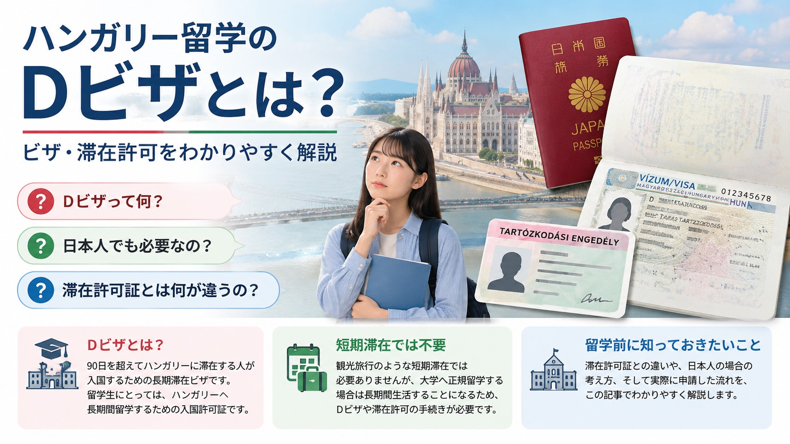
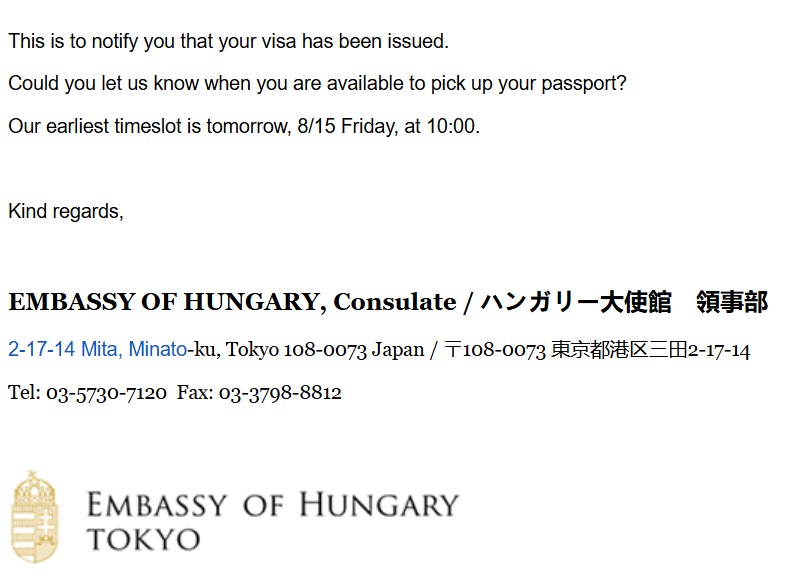
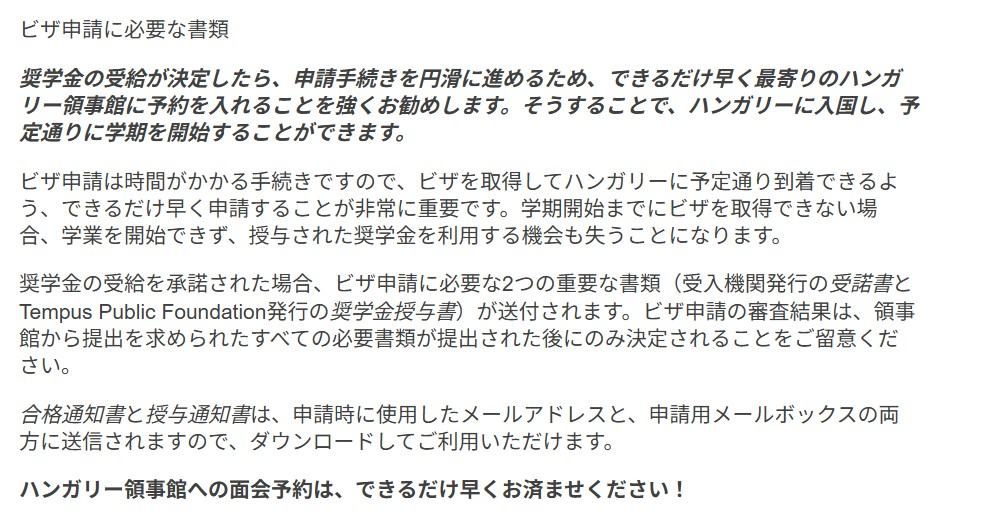

「Dビザって何？」
「日本人でも必要なの？」
「滞在許可証とは何が違うの？」
ハンガリー留学について調べていると、このような疑問を持つ方は多いと思います。
特に、初めて海外大学へ進学する高校生や保護者の方にとって、ビザや滞在許可の仕組みは少し分かりにくい部分です。
この記事では、Dビザとは何か、滞在許可証との違い、日本人は取得する必要があるのか、そして私自身が実際に申請した流れについて解説します。
Dビザとは？
Dビザとは、90日を超えてハンガリーに滞在する人が入国するための長期滞在ビザです。
留学生の場合は、「ハンガリーへ長期間留学するための入国許可証」と考えるとイメージしやすいでしょう。
観光旅行のような短期滞在では必要ありませんが、大学へ正規留学する場合は長期間生活することになるため、Dビザや滞在許可の手続きが必要になります。
Dビザと滞在許可証は別物
ここが一番混乱しやすいポイントです。
Dビザと滞在許可証は、名前は似ていますが役割が異なります。
| 項目 | Dビザ | 滞在許可証 |
|---|---|---|
| 役割 | ハンガリーへ入国するための許可 | ハンガリーで生活するための許可 |
| 取得場所 | 日本のハンガリー大使館 | ハンガリー到着後 |
| 形 | パスポートに貼られる | カード型 |
| 使う場面 | 入国時 | 留学生活中 |
ポイント
Dビザは「入国するための許可」、滞在許可証は「生活するための許可」です。
留学までの流れ
大学合格 ↓ Dビザ申請 ↓ 日本でDビザ取得 ↓ ハンガリーへ渡航 ↓ 滞在許可証を受け取る ↓ 留学スタート
Dビザを取得したら終わりではありません。
ハンガリーで生活するためには、現地で滞在許可証を受け取る必要があります。
日本人はDビザなしでも入国できる？
日本人は90日以内であれば、ビザなしでハンガリーへ入国できます。
そのため、留学の場合でも、日本でDビザを取得してから渡航する方法と、ビザなしで入国し、現地で滞在許可を申請する方法のどちらを案内されることもあります。
つまり、Dビザなしで渡航すること自体が必ずしも違法というわけではありません。
ただし、申請方法は大学や状況によって異なるため、必ず大学やハンガリー大使館の最新情報を確認しましょう。
私は日本でDビザを取得してから渡航しました
私は、日本のハンガリー大使館（三田）でDビザを取得してから渡航しました。
実際に留学してみると、履修登録、住居探し、学生証、銀行口座、SIMカード、大学の各種手続きなど、到着後すぐにやることが山ほどあります。
その中で、ビザや滞在許可まで同時に進めるのは、精神的にもかなり負担になります。
そのため、特別な事情がない限り、日本でDビザを取得してから渡航することをおすすめします。
私が実際にDビザを申請した流れ

私は、7月23日に日本のハンガリー大使館でDビザを申請しました。
申請当日は問題なく受付していただきましたが、後日、大使館から追加書類の提出を求めるメールが届きました。
提出した書類は、銀行残高証明書と宿泊施設情報（日本語・英語）の2点です。
銀行残高証明書で追加提出になりました
申請当日、大使館の担当者から「最低でも、ハンガリーで約1か月生活できる程度の残高は用意しておいてください」という説明を受けました。
実は私は、開設したばかりのネット銀行の残高証明書を提出してしまい、口座残高がほとんど入っていませんでした。
そのため、追加で銀行残高証明書を提出することになりました。
私費留学の場合はもちろん、奨学金留学でも資金確認を求められる場合がありますので、余裕をもって準備しておくことをおすすめします。
約3週間でDビザを受け取れました
追加書類をメールで提出した後、8月15日に「ビザの発給が完了しましたので、パスポートを受け取りに来てください」というメールが届きました。
つまり、私の場合は7月23日に申請し、8月15日に受け取り可能となり、約3週間でDビザを取得することができました。
もちろん、審査期間は時期や申請内容によって変わります。そのため、出発日が決まっている人は、できるだけ早めに申請することをおすすめします。
大学からも「できるだけ早く申請してください」と案内がありました

私が合格した大学からも、留学生向けの案内で「ビザ申請には時間がかかるため、できるだけ早く領事館へ予約してください」と案内がありました。
さらに、ビザ取得が遅れると、予定どおり学期を開始できない可能性があることも記載されていました。
大学側も早めの申請を勧めていますので、合格したら早めに準備を始めることをおすすめします。
現地申請の場合に考えられる注意点
現地で滞在許可を申請する方法もありますが、次のような負担があります。
- 到着後すぐに申請準備が必要
- 必要書類を現地で準備する場合がある
- 追加書類を求められる可能性がある
- 滞在許可証の発行まで時間がかかる
- 大学手続きが遅れることがある
初めて海外で生活する人にとっては、日本で済ませられる手続きは済ませておいた方が安心です。
Dビザ申請に必要な書類
一般的には、次のような書類が必要になります。
- パスポート
- ビザ申請書
- 証明写真
- 入学許可書
- 奨学金証明書
- 銀行残高証明書
- 滞在先情報
- 健康保険関係の書類
大学や年度によって変更されることがありますので、必ず最新情報を確認してください。
まとめ
Dビザは、ハンガリーへ入国するための長期滞在ビザです。
一方、滞在許可証は、ハンガリーで生活するための許可証になります。
日本人は状況によってDビザなしで渡航できる場合もありますが、私自身は日本でDビザを取得してから渡航し、「日本でできる手続きは済ませておいて本当によかった」と感じました。
大学からも早めの申請を勧められていましたので、特別な事情がない限り、時間に余裕を持って日本でDビザを取得してから渡航することをおすすめします。